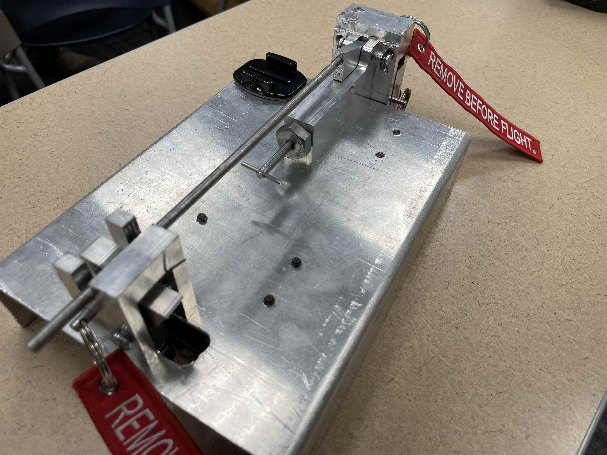

DESIGN PORTFOLIO
This is a curated selection of my original mechanical designs.
Each project highlights different skills in CAD, prototyping, and functional engineering aesthetics.

World Record 49x49x49 Rubik's Cube
This is the world’s highest-order Twisty Puzzle—a 49x49x49 twisty puzzle that I designed, prototyped, and assembled from scratch. The design went through several iterations and hundreds of hours of CAD work to perfect, with a focus on optimizing the internal structure for stability, flexibility, and minimal friction.
The puzzle is comprised of 13,827 individually moving pieces, and took five years to complete. I took on this project without compensation, sponsorship, or external reward. b I scripted, filmed, and edited this video, which documents the entire engineering and assembly process. At the time of writing, it has garnered over 280,000 views on YouTube.
Additional Images


.JPG)


Close
Media Interviews/Coverage
- Guinness World Records – Largest Order Rubik's Cube
- YouTube – Hex Gearbox CAD Overview
- YouTube – Puzzle Interview (Part 1)
- YouTube – Puzzle Interview (Part 2)
- Ruwix Article – 49x49x49 Big Rubik's Cube
- TwistyPuzzles Forum Discussion
- Speedsolving Forum Thread
Close

Rat Vaping Nose Port Design
At Utah State University, I was hired to work for the Odum Lab in the psychology department. This lab focused on animal research, specifically studying the behavioral and health effects of vaping in rats. I was initially brought on due to my skills in 3D printing, but the scope of my position quickly expanded to solving the myriad of engineering problems the lab faced. I was the only engineer working in the Odum Lab for the three years I was there. Afterward, I trained my replacement and have continued to work with them on and off since.
Over time, I personally designed and fabricated numerous devices and electronics for the lab. Most notably, the job of overhauling the nose port design. The nose port (shown on the right side of this page) is a device used to train rats to use a vape. It initially dispenses sugar water to train them to use the port, and once training is complete, it switches to delivering nicotine vapors. The central idea behind the nose port is to allow rats to vape voluntarily, rather than being forced. To accomplish this, vacuum holes were placed around the mouth of the port to suck out any vapor that the rat didn’t breathe in.
The nose port design went through 18 separate iterations. With each version adding features and resolving bugs from the previous design. In the end I wound up completely redesigning the port from the ground up twice to meet the design requirements. This process was highly collaborative—I regularly gathered feedback from the psychology researchers until we arrived at an optimized, fully functional design.
In addition to the nose port, here are some of the other devices I designed and fabricated for this project:
— Photo Detector Electronic Circuit
— Solenoid Electronic Component
— Custom Vape and Solenoid Housing
— Custom Vacuum Tube Splitters
— Custom Box for the Photo Detector
— A wide variety of custom 3D-printed spacers and small widgets
Additional Images
-

The Nose Port -

Full Testing Chamber (Nose port shown on right)

-

Custom Vacuum Tube Splitter -

Custom Vape and Solenoid Housing
Close
Scientific Publications and Presentations
Close

Avalanche Drone Explosive Release Mechanism
This was an extremely interesting senior project that I worked on along with four other mechanical engineers. This project was a real life contract for a company called Delta-V Energetics
Additional Images

- 
Close